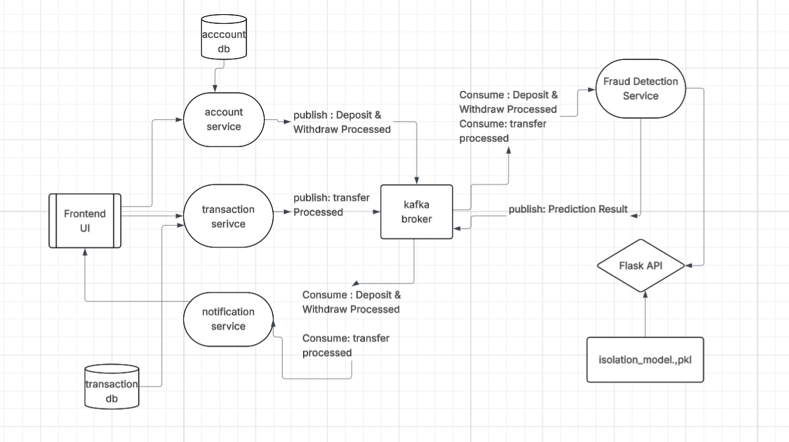

Project 1
Account Transaction Dashboard with ML anomaly Detection
This project is a microservices-based banking dashboard that integrates Spring Boot for RESTful APIs and a Python-based ML service for detecting fraudulent transactions using Kafka for message streaming.
A full-stack microservices application that manages banking accounts and transaction histories, with real-time fraud detection powered by a machine learning model. Built with Spring Boot, Kafka, Flask, and Angular, this system demonstrates end-to-end asynchronous message handling and anomaly prediction using Isolation Forest.
Architecture
Tech Stack
- Spring Boot: Backend microservice for REST APIs and transaction processing
- Apache Kafka: Real-time event streaming and inter-service communication
- Flask (Python): ML microservice exposing Isolation Forest fraud detection model via API
- Docker: Containerization and environment consistency across services
- MySQL: Relational database for accounts and transaction records
- Angular: Frontend UI built with BehaviorSubject and reactive forms
- WebSocket: Real-time frontend updates for new transactions and alerts
Features
- Account & transaction creation via secured RESTful endpoints
- Real-time fraud detection pipeline via Kafka
- Python ML microservice with REST API integration
- Fully containerized setup using Docker Compose
Structure
Account Service
- Receives deposit and withdraw requests from users via REST APIs.
- Sends transaction events to Kafka (topic:
account-topic) as a Kafka producer. - Persists account data into MySQL.
- Tech: Spring Boot, JPA, MySQL, Kafka Producer, REST API
Transaction Service
- Receives transfer requests between accounts via REST APIs.
- Sends transfer events to Kafka (topic:
transfer-topic) as a Kafka producer. - Persists transaction records into MySQL.
- Tech: Spring Boot, JPA, MySQL, Kafka Producer, REST API
Kafka
- Acts as an asynchronous message broker between services.
- Handles messages from Account, Transaction, and Fraud Detection services.
- Forwards messages to the Notification Service.
- Tech: Apache Kafka, Kafka Topics, Spring Kafka (Producer/Consumer), Kafka-python, Docker Compose
Notification Service
- Consumes Kafka messages from other services and converts them into real-time notifications.
- Uses WebSocket to push alerts to the frontend in real time.
- Tech: Spring Boot, JPA, MySQL, Kafka Producer, REST API
Fraud Detection Service
- Consumes transaction events from Kafka and immediately sends them to the Flask ML API using RestTemplate.
- Receives prediction results from Flask and publishes them back to Kafka.
- Tech: Spring Boot, JPA, MySQL, Kafka Producer, REST API
Flask (ML Service)
- Loads a pre-trained Isolation Forest model and analyzes incoming transaction data.
- Trained the model using data extracted from the transaction database.
- Returns a prediction indicating whether a transaction is anomalous or not.
- Tech: Flask, Scikit-learn, Joblib, Pandas, NumPy, Docker
🧠 ML Training Process
To build a robust fraud detection model, I initially trained it using raw features such as
amount, from_account_id, to_account_id, and date.
However, this setup was not effective for detecting anomalies because identifiers like account IDs and timestamps
lacked meaningful behavioral correlation.
🔍 Feature Engineering
To improve detection accuracy, I engineered statistical features that captured user-specific transaction behavior—
especially the relationship between amount and from_account_id. The following Python code shows
how I computed and merged those features:
from_stats = df.groupby('from_account_id')['amount'].agg(['mean', 'std', 'count']).rename(
columns={'mean': 'from_mean', 'std': 'from_std', 'count': 'from_count'}
)
to_stats = df.groupby('to_account_id')['amount'].agg(['mean', 'std', 'count']).rename(
columns={'mean': 'to_mean', 'std': 'to_std', 'count': 'to_count'}
)
df = df.merge(from_stats, on='from_account_id', how='left')
df = df.merge(to_stats, on='to_account_id', how='left')
These engineered features provided contextual information about how typical or atypical a transaction was, based on both the sender's and receiver's historical patterns.
🧪 Model Training with Isolation Forest
Due to the absence of labeled fraud data, I chose an unsupervised anomaly detection approach using
IsolationForest from Scikit-learn. To simulate an imbalanced dataset, I set
contamination = 0.2, assuming roughly 20% of transactions may be anomalous.
from sklearn.ensemble import IsolationForest
model = IsolationForest(
n_estimators=100,
contamination=0.2,
max_features=1.0,
random_state=42
)
model.fit(X)
df['anomaly'] = model.predict(X)
df['anomaly_score'] = model.decision_function(X)
Transactions predicted as anomalies are labeled -1 in the anomaly column.
The anomaly_score gives a confidence score for ranking suspicious transactions.
Finally, this model was serialized using joblib and deployed as a REST API via Flask,
enabling real-time fraud detection within the larger Spring Boot–based microservices architecture.